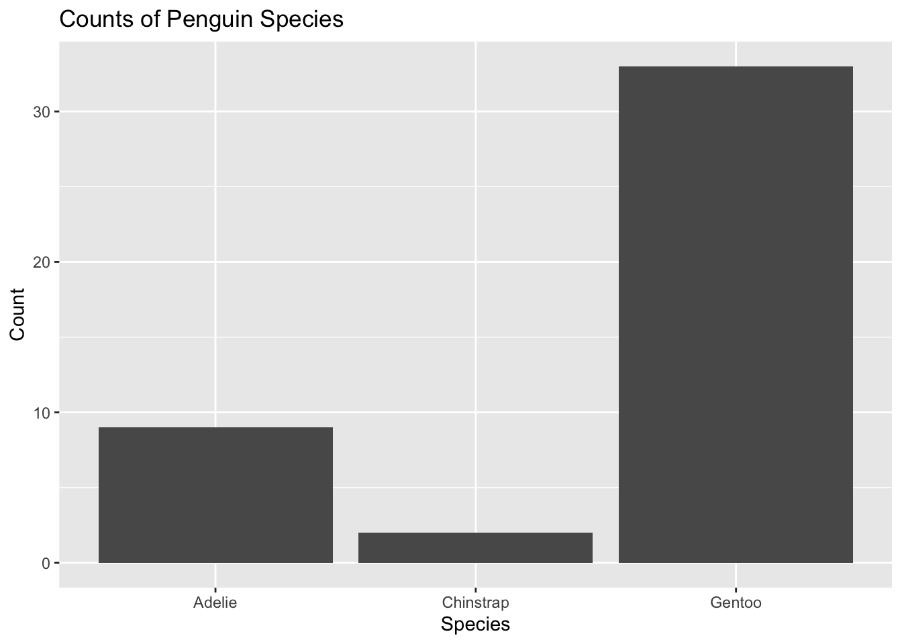
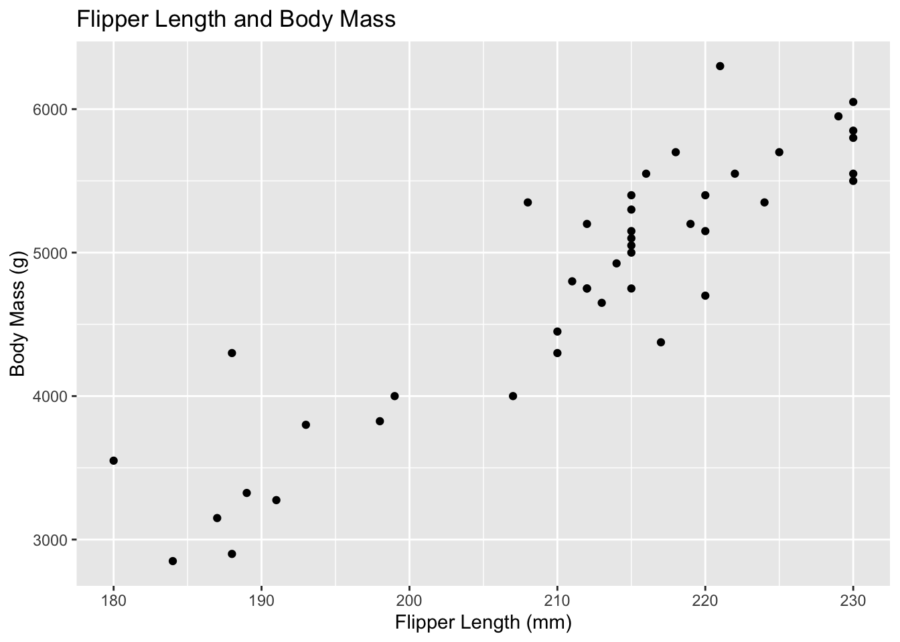
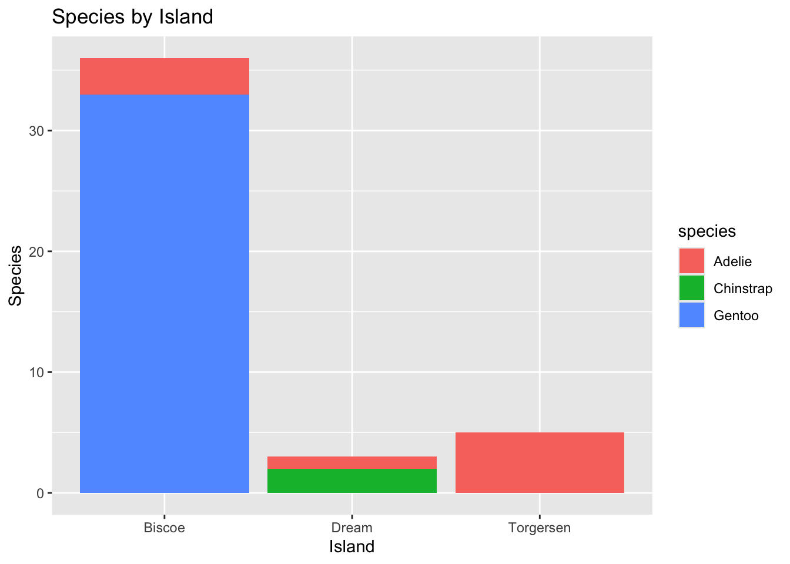

Created and rendered a Quarto document containing an analysis on the palmer penguins data into a reproducible report. Then made a local repository in GitHub.
library(tidyverse)
── Attaching core tidyverse packages ──────────────────────── tidyverse 2.0.0 ──
✔ dplyr 1.1.4 ✔ readr 2.1.5
✔ forcats 1.0.0 ✔ stringr 1.5.1
✔ ggplot2 3.5.1 ✔ tibble 3.2.1
✔ lubridate 1.9.4 ✔ tidyr 1.3.1
✔ purrr 1.0.2
── Conflicts ────────────────────────────────────────── tidyverse_conflicts() ──
✖ dplyr::filter() masks stats::filter()
✖ dplyr::lag() masks stats::lag()
ℹ Use the conflicted package (<http://conflicted.r-lib.org/>) to force all conflicts to become errors
Rows: 44 Columns: 8
── Column specification ────────────────────────────────────────────────────────
Delimiter: ","
chr (3): species, island, sex
dbl (5): bill_length_mm, bill_depth_mm, flipper_length_mm, body_mass_g, year
ℹ Use `spec()` to retrieve the full column specification for this data.
ℹ Specify the column types or set `show_col_types = FALSE` to quiet this message.
We loaded the tidyverse, read the penguins_samp1 csv data file from Dr. Duryea’ github and then ran a line to see the first six rows of the data read into the Quarto notebook.
Data Manipulation
Learning how to manipulate R code to then manipulate data. Focused on filtering rows, subset columns, group data, and computing summary statistics. The side focus is narrating/explaining the workflow during this assignment with a specific interest in using tidy analyses in R with Palmer Penguins data. Documenting observations as well as what is being done behind the code and data manipulation will give a good background when reviewing or troubleshooting other work.
Are there other islands in this data set that have comparison data from the same species?
Is there a positive/negative correlation between body mass and the other body characteristics?
Are there trends present in the data frame that would allow for further research?
DM and Summarization
Building frequency tables in R with the count() function to summarize categorical variables. Numerical variables have more options such as measures of average and measures of spread.
Counts for categorical data are in the chunk below.
(forgot to load the tidyverse library and need to pay more attention to capitalization).
penguins %>%count(island)
# A tibble: 3 × 2
island n
<chr> <int>
1 Biscoe 36
2 Dream 3
3 Torgersen 5
penguins %>%count(island)
# A tibble: 3 × 2
island n
<chr> <int>
1 Biscoe 36
2 Dream 3
3 Torgersen 5
library(tidyverse)penguins %>%count(island)
# A tibble: 3 × 2
island n
<chr> <int>
1 Biscoe 36
2 Dream 3
3 Torgersen 5
ITO = Interpret the output, an acronym that is used throughout the quarto document.
Interpret the output: There are three islands with specific numbers of penguins on each island that are represented in the “n” column in this frequency table.
penguins %>%count(species)
# A tibble: 3 × 2
species n
<chr> <int>
1 Adelie 9
2 Chinstrap 2
3 Gentoo 33
Interpret the output: There are three species of penguin. Gentoo species of penguin appear to have the highest population in this frequency table.
penguins %>%count(island, species)
# A tibble: 5 × 3
island species n
<chr> <chr> <int>
1 Biscoe Adelie 3
2 Biscoe Gentoo 33
3 Dream Adelie 1
4 Dream Chinstrap 2
5 Torgersen Adelie 5
ITO: Three islands with penguin species are shown in a frequency graph. Biscoe penguins have the highest number of individuals, Torgerson penguins follow, and Dream has the lowest number of penguin species in the present data.
Chinstrap penguins are present only on Dream island. Adelie penguins are present on all three islands and Gentoo penguins are present on Biscoe island only.
# A tibble: 1 × 1
mean_bill_length_mm
<dbl>
1 46.4
Missing values:
If we try to compute the quantity, the result will be NA (not applicable) because some of the values are missing. The code below tells R to ignore NA values.
# A tibble: 6 × 2
name value
<chr> <dbl>
1 min_bill_length 36.2
2 first_quartile_bill_length 44.6
3 median_bill_length 46.4
4 mean_bill_length_mm 46.4
5 third_quartile_bill_length 49.1
6 standard_deviation_bill_length 4.93
The last line pivot_longer, converts the table from being very wide to a long table. Cannot currently get the kable() to work.
Update: was able to get kable() to work with some help from Dr. Duryea as mgritter and dplyr needed to be deleted when I failed to load them correctly.
Selecting Specific Rows and Columns
Can select specific columns using select() or rows satisfying certain conditions using filter(). Can select only the species, island, sex and year columns.
penguins %>%select(species, island, sex, year)
# A tibble: 44 × 4
species island sex year
<chr> <chr> <chr> <dbl>
1 Gentoo Biscoe male 2007
2 Gentoo Biscoe male 2008
3 Gentoo Biscoe male 2009
4 Gentoo Biscoe male 2009
5 Gentoo Biscoe male 2009
6 Gentoo Biscoe male 2009
7 Gentoo Biscoe male 2008
8 Gentoo Biscoe male 2009
9 Gentoo Biscoe male 2008
10 Gentoo Biscoe male 2007
# ℹ 34 more rows
Can also filter() available data set for only Chinstrap penguins.
penguins %>%select(species, island, sex, year) %>%filter(species =="Chinstrap")
# A tibble: 2 × 4
species island sex year
<chr> <chr> <chr> <dbl>
1 Chinstrap Dream male 2009
2 Chinstrap Dream female 2007
Showing how to deselect columns using the select() function and (-) sign in front of the column name. This makes a smaller data frame.
Troubleshooting was needed when copying code from the document as the object was not recognized, the object name threw errors until the name was changed to “Chinstrap %>%”
# A tibble: 2 × 3
island sex year
<chr> <chr> <dbl>
1 Dream male 2009
2 Dream female 2007
Grouping and Summarizing Groups
Using group_by() and summarize() to compare summary statistics across groups. I used the bill_depth_mm to compare the average and standard deviation across species groups and also to practice grouping and summarize groups.
IOD: Chinstrap penguins have the largest mean bill depth, followed by Adelie penguins, then Gentoo penguins. Chinstrap penguins have the largest standard deviation (STD) , while Gentoo penguins have the second largest STD with the smallest mean bill depth. Adelie penguins have the smallest STD with the second largest mean bill depth. The larger STD has more variable bill lengths, and probably a broader distribution curve. The smaller STD (Adelie penguins) may have a less broad distribution curve and less of a variation on bill depth than the Chinstrap or Gentoo penguin species.
Data Visualization with ggplot()
Using one category variable: example uses a bar-plot.
penguins %>%ggplot() +geom_bar(mapping =aes(x = species)) +labs(title ="Counts of Penguin Species",x ="Species", y ="Count")

Data visualization with one categorical variable using ggplot().
Using a bar-plot, the visual shows that Gentoo penguins have the largest individual count per species, with Adelie and then Chinstrap with the smallest count of individuals. The (+) is being used to connect and add additional layers to the function. The (+) allows for ggplot to be customized based on layer function and at what step the layer function is being added.
penguins %>%ggplot() +geom_bar(mapping =aes(x = flipper_length_mm)) +labs(title ="Counts of Flipper Length in mm",x ="flipper_length_mm", y ="Count")
Will need to label the species for each flipper length and group these variables to get further information out of the data visualization.
One Numerical variable: using Histogram (geom_histogram()), density (geom_density()), boxplot (geom_boxplot()).
penguins %>%ggplot() +geom_histogram(mapping =aes(x = bill_length_mm), color ="white", fill ="blue") +labs(title ="Distribution of Bill Lengths", x ="Bill Length (mm)", y ="Count")
`stat_bin()` using `bins = 30`. Pick better value with `binwidth`.
There is some confusion when looking to see what the bill length is as these values have multiple significant figures to increase precision for bill length measurement. The histogram shows visual distribution well and is able to be understood at a glance.
Changing to a boxplot does not give further information as the distribution is visibly gone. The histogram is better with visual distribution as the columns show count clearly, while the density visual is the best at showing the distribution of bill lengths but is slightly lacking in finding the count quickly.
penguins %>%ggplot() +geom_density(mapping =aes(x = bill_length_mm),color ="white",fill ="blue") +labs(title ="Distribution of Bill Lengths",x ="Bill Length (mm)", y ="Count")
Two Numerical Variables: exploring relationship with a Scatterplot
penguins%>%ggplot() +geom_point(mapping =aes(x = bill_depth_mm, y = bill_length_mm)) +labs(title ="Bill Depth and Length", x ="Bill Depth (mm)", y ="Bill Length (mm)")
There is higher density around bill depth/length 16, 50.
Trying out comparing flipper length vs body mass to see if there is a potential correlation.
penguins %>%ggplot() +geom_point(mapping =aes(x = flipper_length_mm, y = body_mass_g)) +labs(title ="Flipper Length and Body Mass",x ="Flipper Length (mm)",y ="Body Mass (g)")

Two Categorical Variables: relationships between pairs of categorical variables with bar-plots and fill.
penguins %>%ggplot() +geom_bar(mapping =aes(x = island, fill = species)) +labs(title ="Species by Island", x ="Island", y ="Species")

Great visualization. Can see the adding of the function working to construct the different associations between two categorical variables in the layers present. The lowercase ‘species’ could potentially be changed but then the object would throw an error and not be found?
One Numerical and One Categorical Variable: visualization to compare numerical and categorical variables using boxplots or faceted plots.
penguins %>%ggplot() +geom_boxplot(mapping =aes(x = bill_depth_mm, y = species)) +labs(title ="Bill Depth by Species", x ="Bill Depth (mm)", y ="")
penguins %>%ggplot() +geom_histogram(mapping =aes(x = bill_length_mm)) +facet_wrap(~species, ncol =1) +labs(title ="Bill Depth by Species", x ="Bill Depth (mm)", y ="")
`stat_bin()` using `bins = 30`. Pick better value with `binwidth`.
The histogram is less specific and shows the visual spread and the range-count. The boxplot is visually specific and displays data using the five-number summary.
Advanced Plotting: building more complex plots
penguins %>%filter(!is.na(sex)) %>%ggplot() +geom_point(mapping =aes(x = bill_length_mm, y = flipper_length_mm,color = species,shape = sex)) +geom_smooth(mapping =aes(x = bill_length_mm,y = flipper_length_mm,color = species),method ="lm") +facet_grid(island ~ sex, scales ="free") +labs(title ="Flipper and Bill Lengths by Species and Sex",x ="Bill Length (mm)",y ="Flipper Length(mm)") +theme_light()
`geom_smooth()` using formula = 'y ~ x'
Warning in qt((1 - level)/2, df): NaNs produced
Warning in qt((1 - level)/2, df): NaNs produced
Warning in max(ids, na.rm = TRUE): no non-missing arguments to max; returning
-Inf
Warning in max(ids, na.rm = TRUE): no non-missing arguments to max; returning
-Inf
Breaking down the code,
The filter is keeping the rows that fit the function, and is searching for missing variables. The ! in R stands for not, so it is saying to filter not applicable missing variable sex.
ggplot creates a scatterplot,
geom_point creates a scatterplot and overlays a loess trendline. geom_smooth overlays the data and creates the shadow visuals on the data frame. ‘Aes’ functions in the () are a static aesthetic that apply to the layer. scale is used to show the data being represented on the graph. Color and shape are another scale pair.
facet_grid breaks down the smaller subsets of data, can see this where the facet is comparing island ~ sex.
labs is labeling and titling everything in the visual.
theme_light works with the visual of the plot and controls the coloration, and customization.
Final Question:
If you haven’t done so already, can you determine whether the average bill length for a penguin exceeds mm? Are you able to answer only for a subset of penguins or for the entire population? How certain are you with your answer?
The average bill length is 46.37 mm, and does exceed 45 mm. I am only able to answer for a subset of penguins as this data is based on the three species across an area of three islands. I am certain that the average length of bills exceeds 45 mm in this subset of penguins.
Summary
Are there other islands in this data set that have comparison data from the same species?
Cannot answer this with current data.
Is there a positive or negative correlation between body mass and the other body characteristics?
There is a positive correlation between body mass and flipper length. Other body characteristics will have to be run to determine if there is any correlation.
penguins %>%ggplot() +geom_point(mapping =aes(x = flipper_length_mm, y = body_mass_g)) +labs(title ="Flipper Length and Body Mass",x ="Flipper Length (mm)",y ="Body Mass (g)")